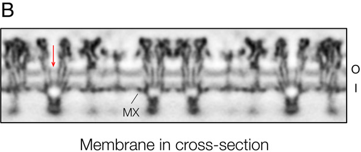

Two leaflet-associated density bands
The paired tracks between receptor cross-sections identify the two phospholipid-headgroup regions of one lipid bilayer in this averaged Torpedo membrane reconstruction. The retained O/I labels refer to the upper and lower bands.

Read the authors’ marks
- O · upper band
- Outer, extracellular phospholipid-headgroup region.
- I · lower band
- Inner, cell-facing phospholipid-headgroup region.
- MX · helix mark
- An acetylcholine-receptor helix on the inner side, occupying some of the headgroup-region area.
- Red arrow · pore locator
- The authors identify a receptor’s central water-filled pore. The arrow locates a structure; it does not show flux or direction of transport.
This is a cross-section from averaged cryo-EM map 2 (EMD-14946), reported resolution 5.5 Å. The paper’s 5.2 Å value describes the combined average of two maps, not this individual map. Dense receptor cross-sections interrupt the paired lipid tracks; the bands represent headgroup-region density, not individually resolved lipid molecules or literal molecular positions.
The preparation is acetylcholine-receptor-rich membrane extracted from Torpedo marmorata electric organ, incubated for two weeks at 17°C in low-salt buffer to form tubular vesicles, then vitrified and reconstructed from classified tube segments. It is a specialized cholesterol-rich animal-membrane preparation. Its composition and ordering cannot be generalized to all membranes.
This is an experimental reconstruction, not a raw plasma-membrane micrograph, normal human tissue or a live observation. No transport, permeability or lipid motion is measured here. The source provides no image scale bar for this panel. The map’s 1.34 Å voxel spacing cannot be converted into a scale bar on this publication bitmap.
Nigel Unwin (2022), Structure of a cholinergic cell membrane, PNAS 119:e2207641119, Figure 1B · CC BY 4.0. Author-hosted primary PDF and full caption. Cropped from the original embedded publication raster; source B/O/I/MX/arrow/title retained. No resizing, contrast changes, recoloring or new anatomical marks.
The external key explains the original O/I/MX marks. Native size preserves the source pixels; display enlargement adds no new experimental detail.